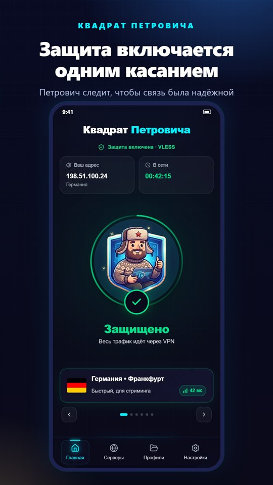
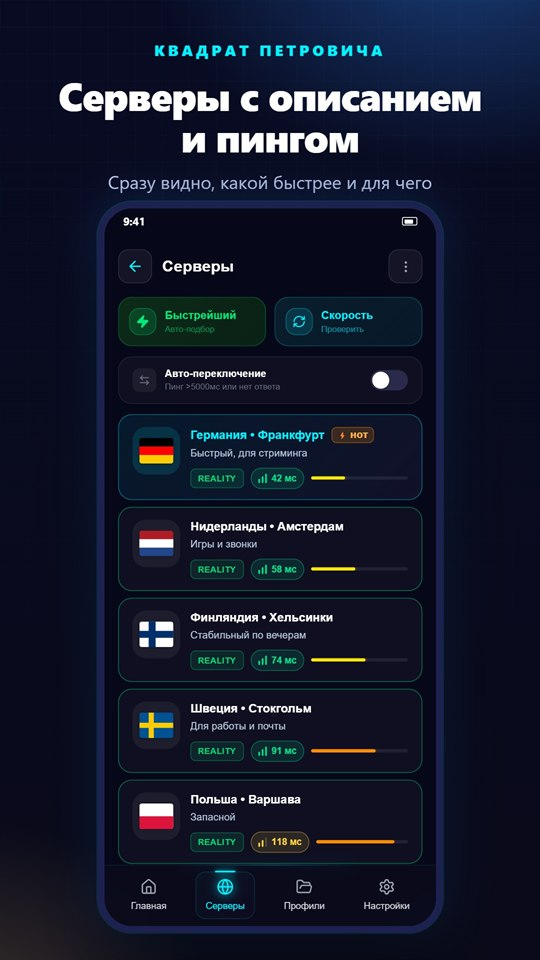
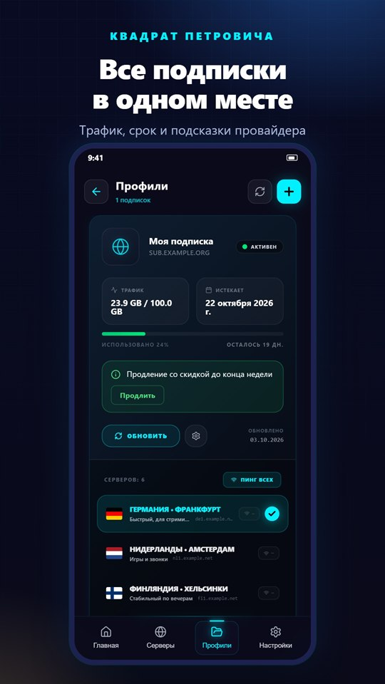
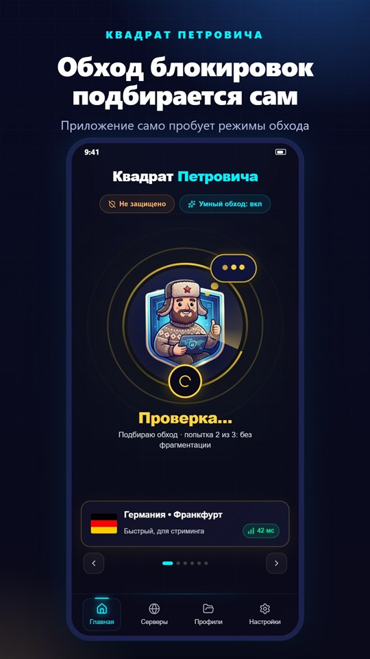
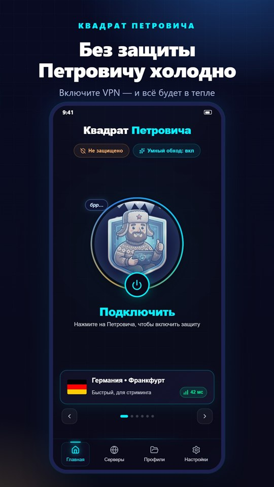

Умный обход блокировок
Приложение само пробует режимы обхода, пока не найдёт рабочий. Помогает при жёстком DPI и белых списках.
VPN для Android и Windows
Умный обход блокировок: приложение само подбирает режим, а Петрович в ушанке следит, чтобы связь была надёжной. Работает с подписками любых провайдеров.
Файлы лежат на GitHub, в официальном репозитории приложения. Выберите свою платформу.
Android 7.0 и новее. Приложение само предложит обновиться, когда выйдет новая версия.
Скачать APK 95 МБWindows 10 и новее, 64-бит. Установка не требует прав администратора, обновления ставятся сами при выходе из приложения.
Установщик 119 МБ Portable, без установки 119 МБСборки пока без цифровой подписи издателя: если Windows покажет предупреждение SmartScreen, нажмите «Подробнее» → «Выполнить в любом случае».
Тёмный неоновый интерфейс, понятные экраны и Петрович, который реагирует на то, что происходит со связью.





Всё, что нужно, чтобы связь работала там, где другие клиенты сдаются.
Приложение само пробует режимы обхода, пока не найдёт рабочий. Помогает при жёстком DPI и белых списках.
Ссылка, QR-код, буфер обмена или файл. Панели Remnawave, Marzban, 3x-ui, Hiddify и параметры Happ.
Автовыбор по пингу и автопереключение, если связь ухудшилась. Серверы с описанием и цветным пингом.
Если VPN оборвался, трафик не уйдёт мимо. Автопереподключение при смене Wi-Fi на мобильную сеть.
Сами выбираете, какие приложения идут через VPN. Банки и Госуслуги можно оставить напрямую.
Глобально, обход РФ или только заблокированное. Свои правила по доменам, IP и странам.
Сразу видно, какой у вас сейчас IP и страна. Плюс тест скорости и проверка утечек DNS.
Блокировка рекламы, DoH, резервная копия настроек с шифрованием. Подробности в политике конфиденциальности.
Подключается, всё в порядке, нет сети. Без защиты ему холодно, так что включайте VPN, и всё будет в тепле.
Три шага, и Петрович берётся за дело.
При первом запуске приложение само запросит бесплатный пробный доступ на 1 день, подписка не нужна. Этого хватит, чтобы проверить, как работает обход у вашего оператора. Пробный доступ выдаётся один раз на устройство.
Приложение — клиент: оно подключается к серверам вашей подписки. Подписку можно получить у нас или взять любую другую: панели Remnawave, Marzban, 3x-ui, Hiddify, ссылки vless:// и другие. Для знакомства есть пробный доступ на 1 день.
Скачайте файл, откройте его и разрешите установку из этого источника: Android спросит один раз. Потом приложение само предложит обновиться, когда выйдет новая версия.
Сборки пока не подписаны цифровой подписью издателя, поэтому SmartScreen может предупредить о неизвестном приложении. Скачивайте файлы только с этой страницы или со страницы релизов на GitHub, затем нажмите «Подробнее» и «Выполнить в любом случае».
«Квадрат Петровича» ставится рядом со старым Sim Proxy. В старом приложении откройте «Настройки → резервная копия (экспорт)» и сохраните файл, в новом — «Настройки → Восстановить из бэкапа». Или просто добавьте подписку заново по ссылке.
В Windows обновление скачивается само и ставится при выходе из приложения. В Android приложение предложит обновиться, когда выйдет новая версия.
Приложение не содержит рекламы и аналитических библиотек и не отправляет нам список ваших сайтов. Подробности — в политике конфиденциальности.